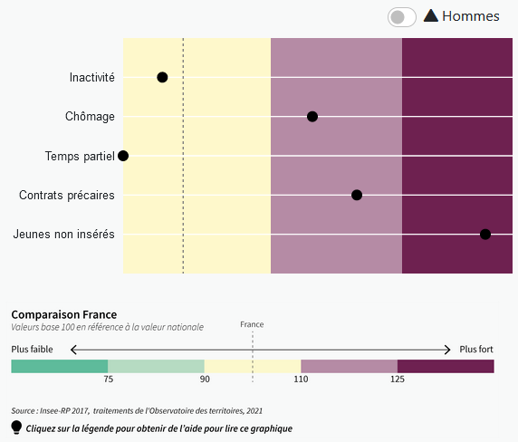

Foire aux questions
Qu'est-ce qu'un EPCI / EPT ?
Un EPCI est un établissement public de coopération intercommunale, autrement dit : une intercommunalité. Au sein de la métropole du Grand Paris, les établissement publics territoriaux (EPT) ont le statut d'EPCI et constituent un découpage en 11 entités de ce territoire où résident près d'1 Français sur 10. La commune de Paris constitue une entité à part de ce découpage cartographique.
Comment savoir quel est mon EPCI / EPT ?
La carte des EPCI / EPT est accessible au lien suivant. Vous pouvez rechercher votre commune directement en cliquant sur "Rechercher un territoire" dans le volet de gauche.
Comment sont construites les 3 cartes de diagnostic (insertion professionnelle et conditions d'emploi des femmes, inégalités femmes-hommes et freins potentiels à l'emploi des femmes) ?
La méthode de construction de l'ensemble des indicateurs est détaillée dans l'onglet "Cartes & données". Le commentaire méthodologique est accompagné d'une aide à l'interprétation et d'une carte, téléchargeable au format image.
Qu'est-ce qu'un frein potentiel à l'emploi des femmes ?
Il existe de nombreux freins potentiels à l'emploi des femmes, qu'il s'agisse d'insertion professionnelle (inactivité, chômage...) ou de conditions d'emploi (précarité, temps partiel...). Ces freins potentiels peuvent être directs (formation, faible mixité de l'offre d'emploi...) ou indirects (situation familiale, mobilités...). Dans tous les cas, ils n'ont pas les mêmes conséquences pour toutes les femmes et dans tous les contextes territoriaux : le fait d'avoir une famille nombreuse peut ainsi ne pas constituer un frein pour l'emploi des femmes dans le cas d'un partage équitable du travail domestique au sein du foyer et/ou si les structures d'accueil des enfants sont en nombre suffisants sur le territoire. De même, l'éloignement aux écoles représente un moindre frein à l'emploi des parents s'il existe un réseau de transports en commun suffisamment dense. Les freins potentiels présentés dans l'application SOFIE ne sont pas exhaustifs de l'ensemble des freins qui peuvent peser sur l'emploi des femmes et restent difficiles à mesurer, qui plus est à un niveau géographique fin (répartition du travail domestique, état de santé, discriminations...).
Comment lire les graphiques de SOFIE ?
Capture d'écran du graphique sur l'insertion professionnelle et les conditions d'emploi : l'exemple de la CC du Bassin de Marennes
Dans ce graphique, les valeurs sont standardisées en référence à la valeur nationale pour les femmes qui vaut 100 pour chaque indicateur. La ligne en pointillés représente cette valeur nationale. Plus les valeurs sont situées à gauche de cette ligne moins le phénomène est marqué comparativement à la situation des femmes en France ; inversement, plus les valeurs sont situées à droite de cette ligne et plus la situation est marquée comparativement à la situation des femmes en France.
Par défaut, les valeurs représentées sous forme de points décrivent la situation des femmes. Il est possible de comparer celle-ci avec la situation des hommes en activant le petit bouton en haut à droite du graphique. De la même façon que pour les femmes, les valeurs des indicateurs pour les hommes sont standardisées en référence à la valeur nationale pour les femmes qui vaut 100.
Attention : ce graphique permet ainsi de comparer d’une part la situation des femmes localement avec la situation des femmes en France en général et d’autre part la situation des femmes localement avec la situation des hommes localement, mais pas la situation des hommes localement avec la situation des hommes en France en général.
Le graphique de freins potentiels est construit et se lit de la même façon, sans référence à la différence femmes-hommes toutefois.
Qu'est-ce qu'un indice base 100 ?
Pour comparer plusieurs indicateurs qui n'ont soit pas la même unité, soit par le même ordre de grandeur, on peut avoir recours aux indices base 100. Ceux-ci sont construits en référence à une valeur (le plus souvent la valeur nationale). Chaque valeur locale de la série statistique est "convertie" en base 100, c'est à dire qu'on lui applique la formule : [valeur locale] * 100 / [valeur nationale]. Pour chaque valeur locale, il est ainsi directement possible de dire si elle est supérieure ou inférieure à la valeur de référence, dans quelle proportion et surtout de pouvoir opérer une comparaison entre plusieurs indicateurs.
Comment en savoir plus sur la dimension territoriale de l'accès à l'emploi des femmes ?
L'onglet "Cartes & données" permet d'accéder à des informations sur chaque indicateur mobilisé par l'application : chiffres-clés, méthode de construction, ressources documentaires. L'Observatoire des territoires a également publié en mars 2021 une étude sur la dimension territoriale de l'accès à l'emploi des femmes, accessible en ligne et téléchargeable au format pdf.
Comment se saisir de la question de l'accès à l'emploi des femmes localement ?
L'ex CGET a contribué à l'élaboration d'un guide pour favoriser l'accès à l'emploi des femmes dans les territoires ruraux : Guide Favoriser l'accès à l'emploi des femmes dans les territoires ruraux. Outils et bonnes pratiques. La région Ile-de-France s'est également saisie de la question dans un guide spécifique sur les territoires prioritaires de la politique de la ville : Favoriser l'insertion professionnelle des femmes dans les quartiers politique de la ville.
À qui m'adresser si j'ai des diffultés / des questions / des remarques sur SOFIE ?
Vous pouvez contacter l'équipe de l'Observatoire des territoires à l'adresse mail : observatoire@anct.gouv.fr ou via notre plateforme de contact.